A notepad, not a nation-state of apps
Rich text, tables, a calendar, and reminders all live inside the same note, so the way you organize actually matches the way you think.
Get it on Google PlayAndroid · free to start, $2.99 one-time to unlock everything
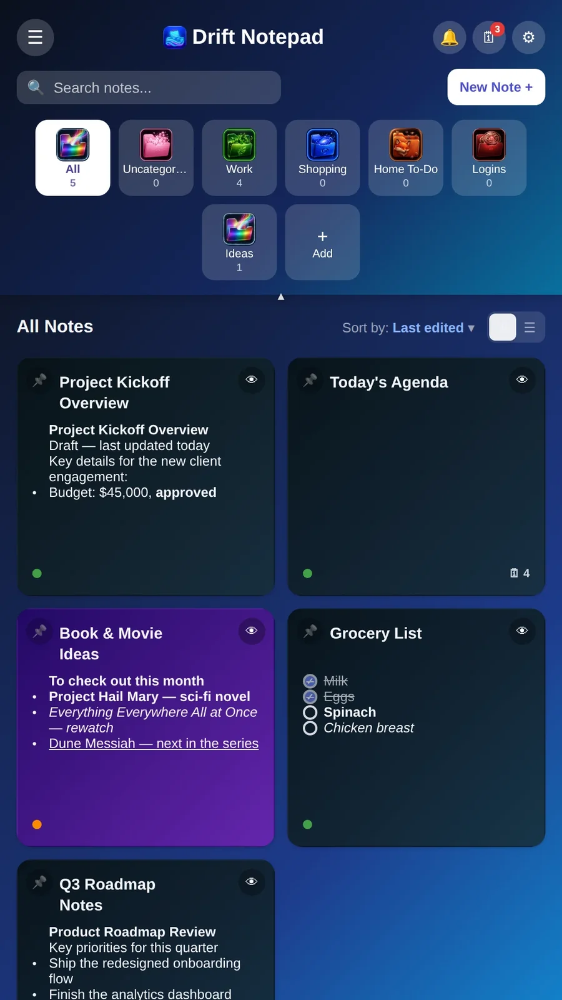
Formatting
Bold, italic, and underline are a tap away, and every list type, bulleted, numbered, or checklist, sits right on the same toolbar.
Long-press a marker to drag a line into place, or press Enter twice on an empty list item to indent a sub-point without breaking your flow.
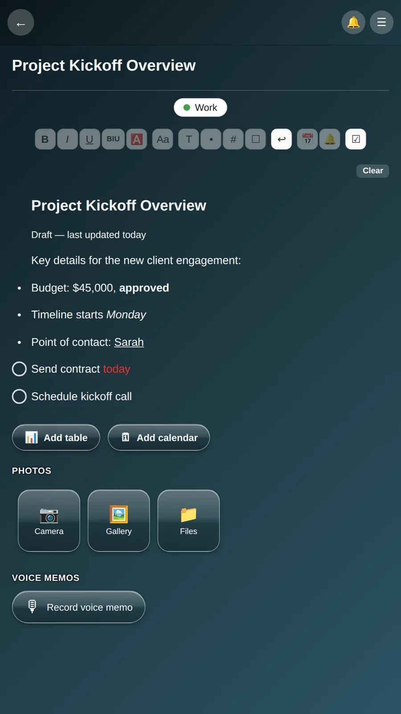
Tables
Drop a real table into any note, complete with dates, numbers, running totals, without leaving the page you're already writing on.
Add or remove rows in place, and when it's time to hand the data off, export straight to CSV.
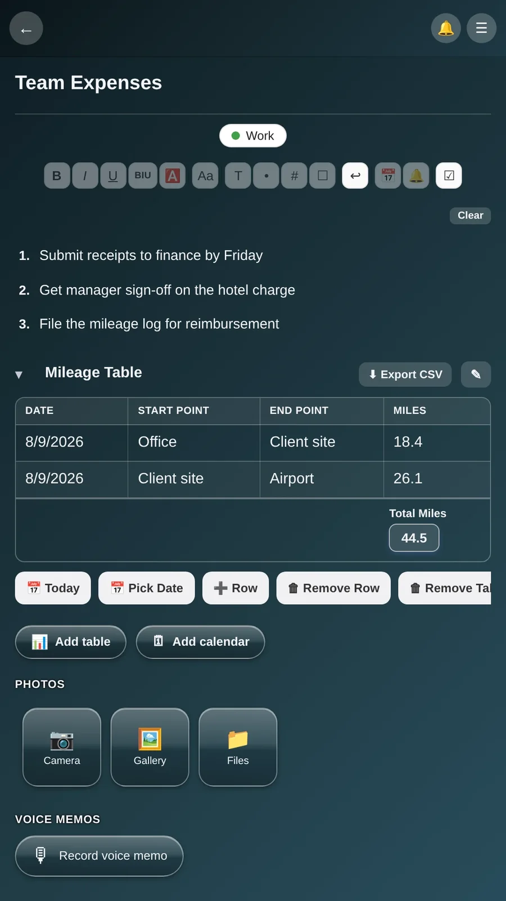
Calendar & reminders
Pull up an agenda for any date, grouped into morning, afternoon, and evening, without switching to a separate calendar app.
Attach a timed reminder to the whole note or to a single checklist item, so the alert follows the task, not the other way around.
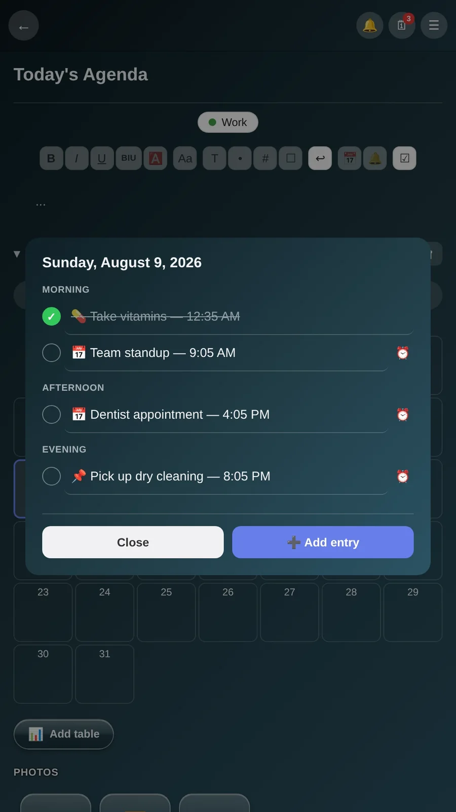
Live updates
Every running reminder shows up in one cross-note list. Tap the bell from any screen to see it. Each entry ticks down in real time, once a second, instead of freezing at whatever time you last opened it.
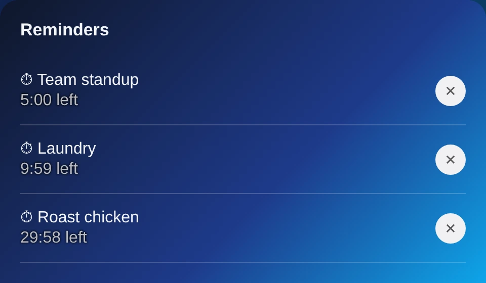
Home screen
The task tracker widget sits on your home screen showing today's agenda at a glance, with each item's own color and a tap straight into its note.
Next to it, the quick-capture icon opens a brand-new blank note in one tap, no dashboard, no menu, just a page ready to write on.
Notifications
When a timer or alarm fires, it lands as a real notification in your status bar, not just something waiting quietly inside the app.
Every reminder notification carries Snooze and Mark Done right on it, so you can act on it without ever opening Drift Notepad.
Appearance
Vibrant leans into color: gradient folder art, a lively dashboard, icons with personality. Professional strips that back to a flat, muted palette built for a desk you share with other people. Switch either way, anytime, from Settings.
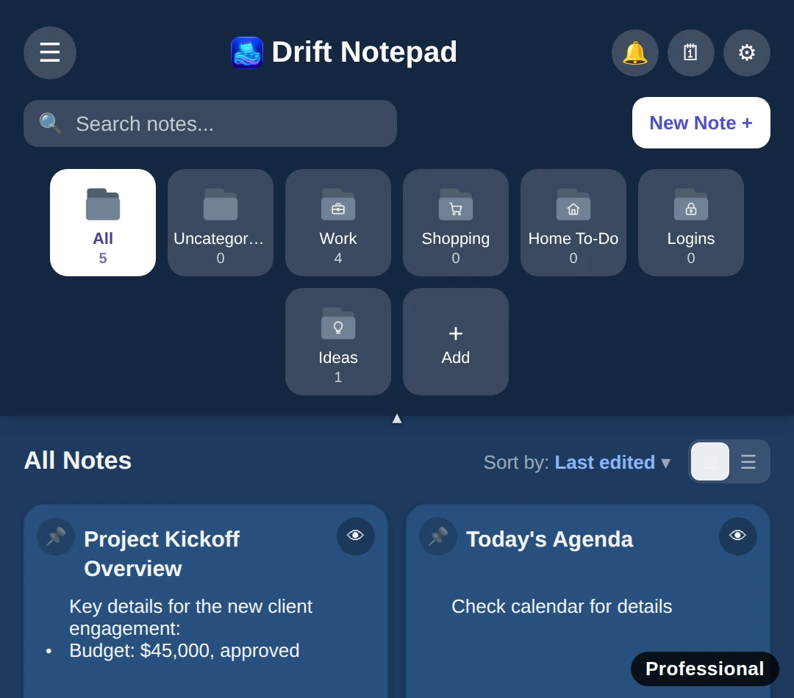
Layout
Grid view shows every note as a small card, good for a dashboard you mostly glance at. List view trades that for one dense, scrollable column, better once a folder holds fifty notes instead of five.
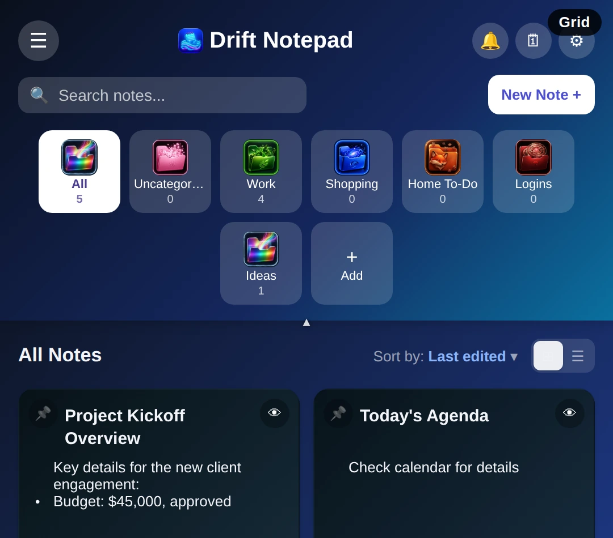
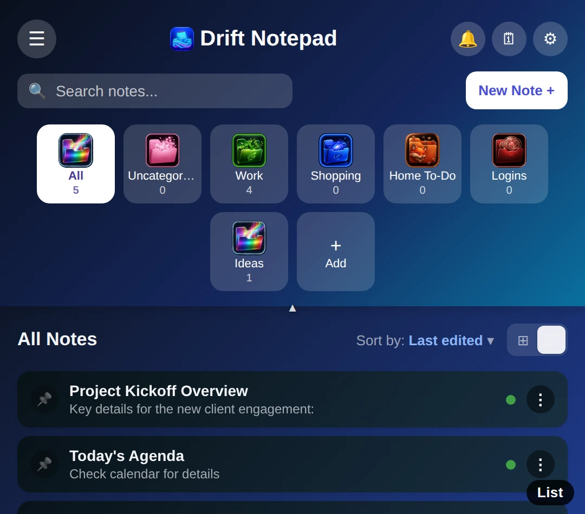
Color schemes
Vibrant's palette runs the full range: soft pastels, pure black, warm gold, neon nightlife. Professional trades gradients for flat, neutral options like Blue, Slate, Brown, and a warm Legal Pad cream. Eight looks, one app.
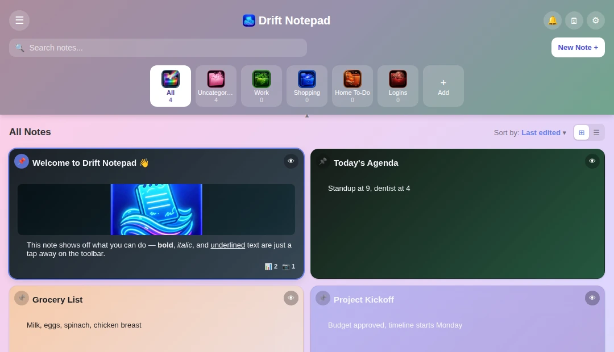
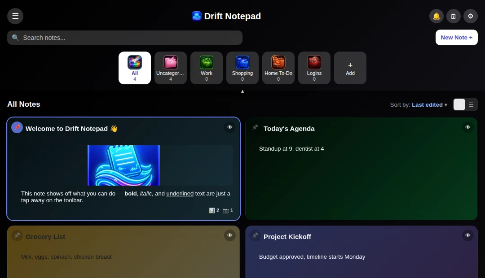
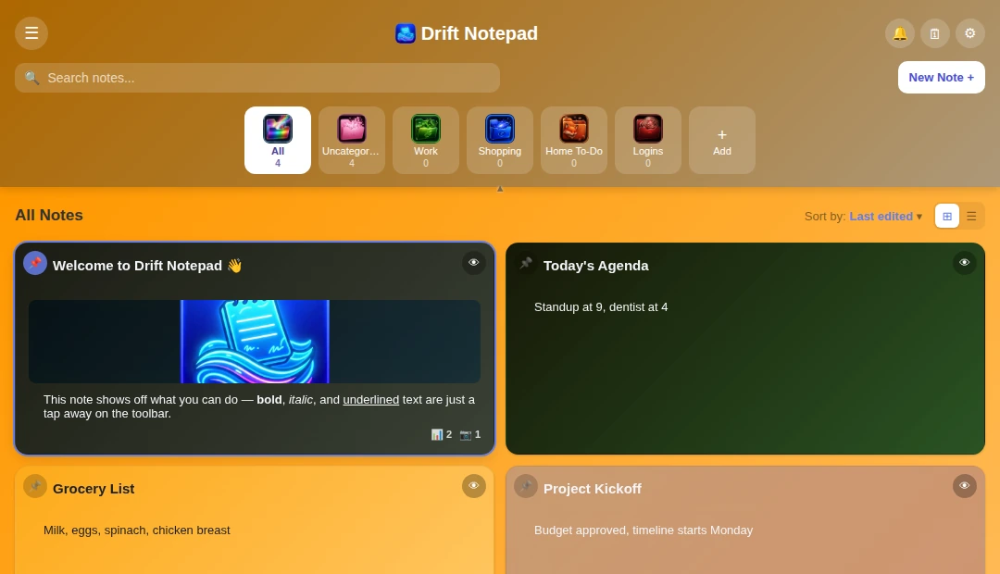
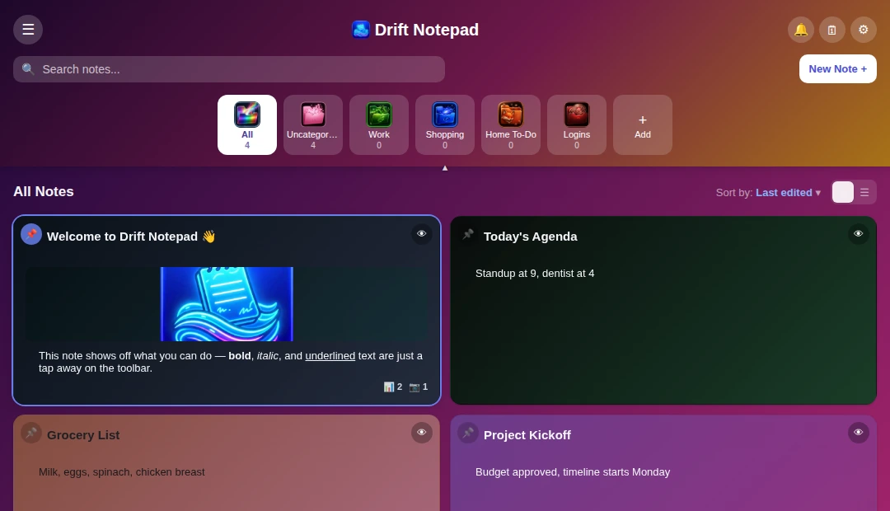
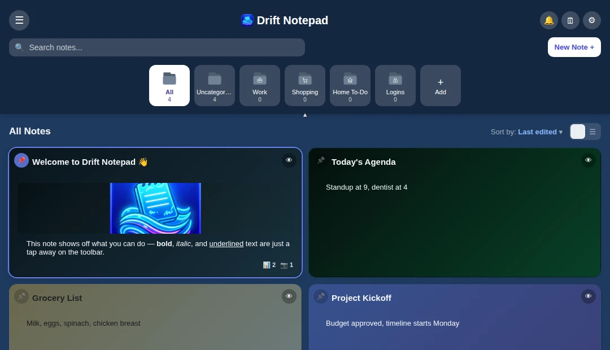
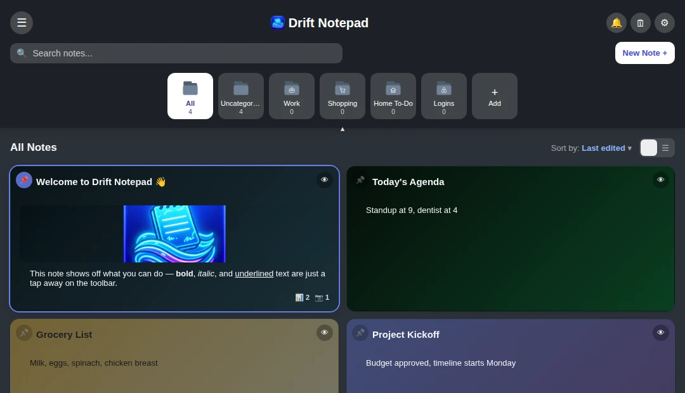
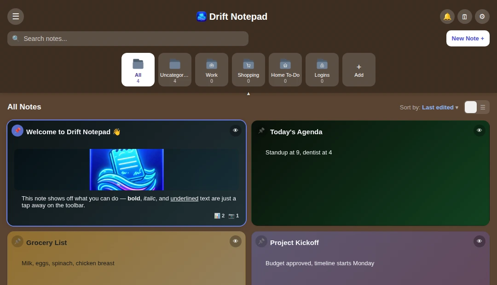
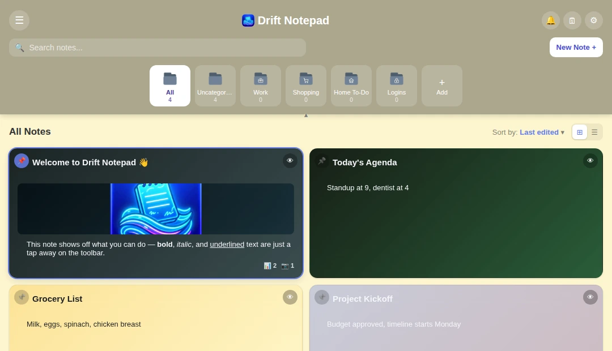
Privacy
No account, no cloud, no server for your notes to ever touch. Everything lives in local storage on this device, the way it's always worked, without a login screen bolted on top.
Nothing to sign up for. No email, no password, nothing to lose access to.
Every note stays in local storage on this device. There's no server for it to ever touch.
If something breaks, an anonymous error report can help fix it (never note content), and it's one toggle away from off.
Android · free to start, $2.99 one-time to unlock everything, no subscription